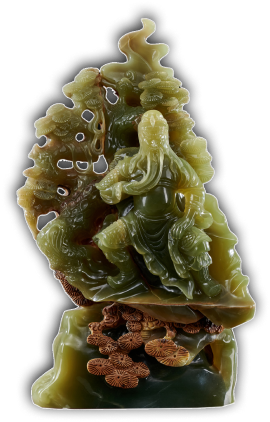
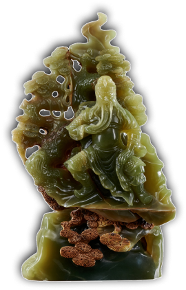

Gỗ tuyết tùng, còn được biết đến với tên gốc là "sugi" trong tiếng
Nhật và "shan" trong tiếng Trung, là một loại gỗ quý hiếm thường
được tìm thấy ở các khu rừng cao nguyên và núi non của châu Á.
Loại gỗ này thường có màu sắc từ màu đỏ nâu đậm đến màu nâu vàng
nhạt, tạo ra một vẻ đẹp tự nhiên và sang trọng.
Chất liệu gỗ
tuyết tùng có đặc điểm mềm mại, mịn màng và dễ cắt, điều này khiến
nó trở thành lựa chọn lý tưởng cho việc điêu khắc và chạm trổ.
Ngoài ra, gỗ tuyết tùng cũng có mùi thơm đặc trưng, khiến cho sản
phẩm làm từ loại gỗ này mang lại không chỉ một cái nhìn đẹp mắt mà
còn một trải nghiệm cảm giác thú vị cho người sử dụng.
Trong văn hóa Á Đông, tượng thờ gỗ tuyết tùng mang theo nhiều ý
nghĩa sâu sắc. Đầu tiên, gỗ tuyết tùng thường được sử dụng để điêu
khắc các tượng thần linh, vị tiên nhân và anh hùng lịch sử, thể
hiện sự tôn kính và sùng bái của người dân đối với các biểu tượng
tâm linh. Ngoài ra, với vẻ đẹp tự nhiên và mùi thơm đặc trưng, gỗ
tuyết tùng trở thành biểu tượng của sự cao quý, tinh tế và phẩm
chất tốt đẹp trong văn hóa Á Đông. Cuối cùng, theo quan niệm phong
thủy, việc sử dụng tượng thờ gỗ tuyết tùng trong không gian sống
hoặc làm việc được coi là một cách để thu hút và giữ lại sự may
mắn và bình yên cho gia chủ.
TƯỢNG THỜ
Mã sp: 000
Mã sp: 000
Mã sp: 000
Mã sp: 000
Mã sp: 000
Mã sp: 000
Mã sp: 000
Mã sp: 000
Mã sp: 000
 

QUAN VŨ
Mã sp: 000
Kích thước:
Rộng:
Cao:
Dày:
Đế Gỗ:
GIÁ: 5000 USD
Chọn vào giỏ hàng

Tư vấn sản phẩm
QUAN VŨ